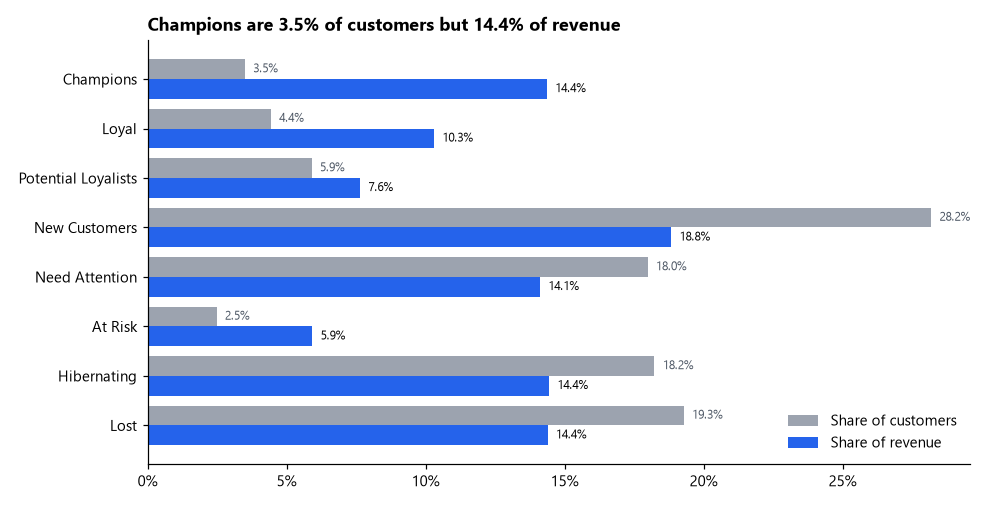
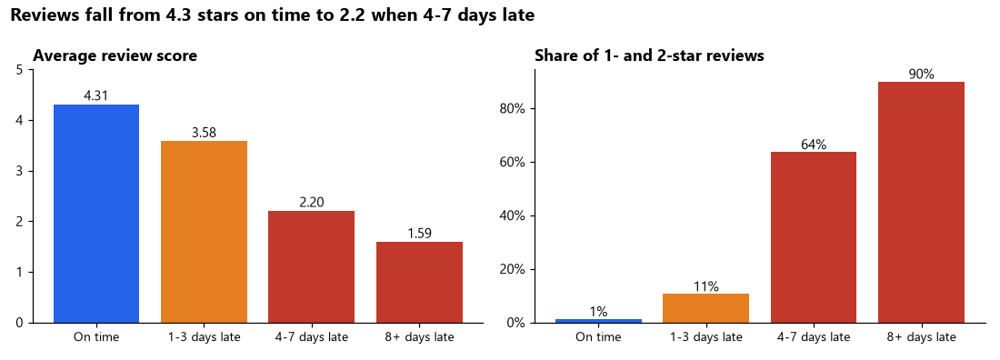
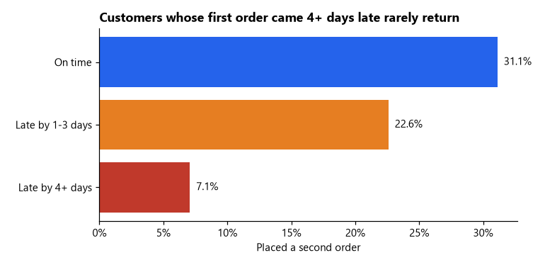
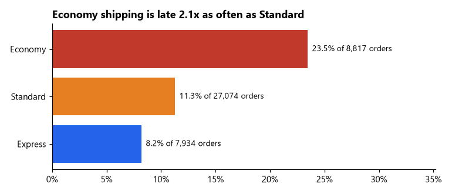
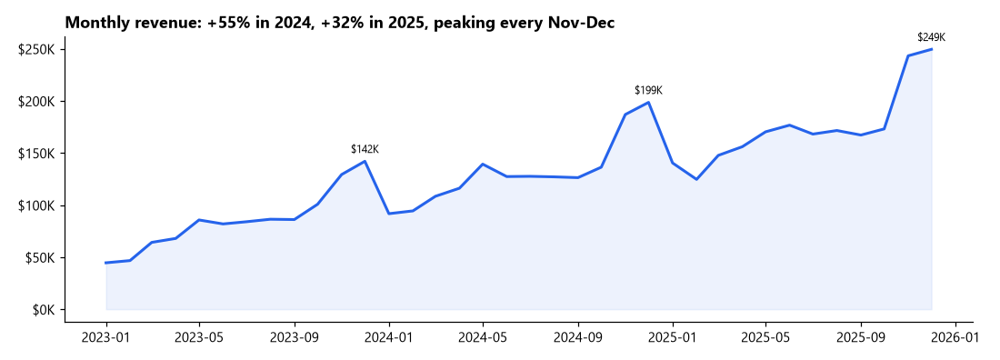
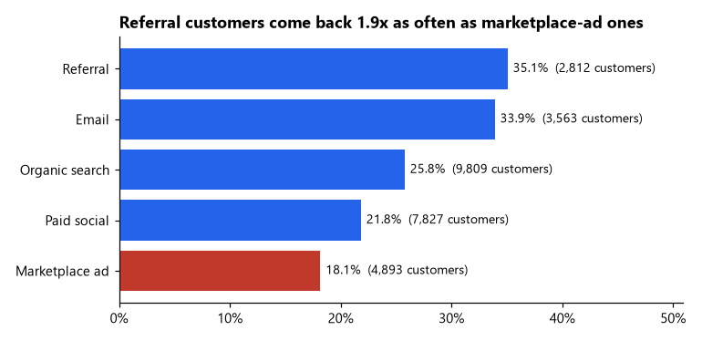
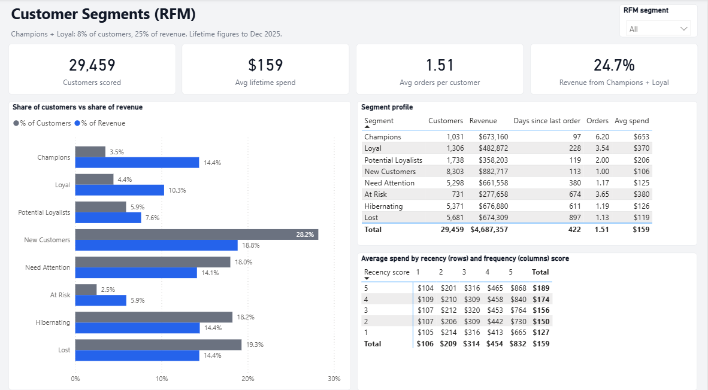
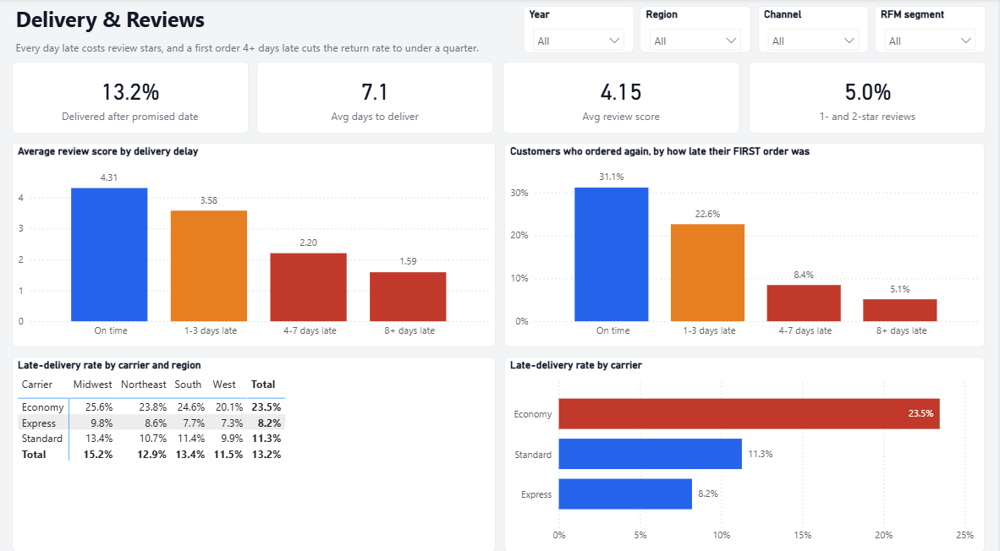

E-commerce analytics · RFM segmentation · delivery analysis
Who comes back, and what late deliveries cost
Three years of orders from Harbor & Pine, an online home & lifestyle store: 30,000 customers, 45,455 orders and $4.69M in revenue. I segmented customers by Recency, Frequency and Monetary value and measured how delivery delays affect reviews and repeat purchases.
Synthetic data. The dataset was generated with a documented Python simulator (growth, seasonality, loyal vs one-off buyers, carrier delays, review behaviour) and deliberately made messy for the cleaning step. The patterns are built into the simulator; the project demonstrates the method end to end.
Key findings
- Growth is from volume, not basket size. Revenue grew 55% in 2024 and 32% in 2025 while the average order stayed at about $105.
- Only a quarter of customers order twice. Most second orders come within 90 days of the first.
- A small group carries the revenue. Champions and Loyal customers are 7.9% of customers but 24.7% of revenue.
- Every day late costs review stars: 4.31 on time, 3.58 at 1–3 days late, 2.20 at 4–7 days, 1.59 at 8+ days.
- A late first order loses the customer. 31.1% come back after an on-time first delivery, 7.1% after one that is 4+ days late.
- Economy shipping is the main source of lateness, late 23.5% of the time and worst in the Midwest.
- Referral and email customers return almost twice as often as customers from marketplace ads (35% and 34% vs 18%).
- Furniture is the weak category: 15% of revenue at a 31.5% gross margin (store average 46%) and the lowest reviews.
Customer segments
R and M are quintiles; F uses order-count bands because three in four customers have a single order.

| Segment | Customers | % customers | % revenue | Avg orders | Avg spend |
|---|---|---|---|---|---|
| Champions | 1,031 | 3.5% | 14.4% | 6.20 | $653 |
| Loyal | 1,306 | 4.4% | 10.3% | 3.54 | $370 |
| Potential Loyalists | 1,738 | 5.9% | 7.6% | 2.00 | $206 |
| New Customers | 8,303 | 28.2% | 18.8% | 1.00 | $106 |
| Need Attention | 5,298 | 18.0% | 14.1% | 1.17 | $125 |
| At Risk | 731 | 2.5% | 5.9% | 3.65 | $380 |
| Hibernating | 5,371 | 18.2% | 14.4% | 1.19 | $126 |
| Lost | 5,681 | 19.3% | 14.4% | 1.13 | $119 |
Late deliveries
Lateness drives bad reviews, and a late first order makes a second one much less likely.



Growth and acquisition


Power BI dashboard
Four pages (Sales Overview, Customer Segments, Delivery & Reviews, Products) with synced slicers, built as a Power BI Project (TMDL + PBIR) so every measure and visual is reviewable in Git.


Recommendations
- Ship first orders by Standard rather than Economy; that is where lateness costs the most.
- Run a re-order campaign 30–90 days after a customer's first purchase.
- Win back the 731 At Risk customers with a personal offer before they become Lost.
- Judge acquisition channels on 12-month customer value; move budget toward referral and email.
- Review Furniture pricing and packaging.
- Send finance the 40 orders whose payments don't add up to the order total.
How it was built
- Generate the raw data with a seeded Python simulator (6 tables, deliberately messy).
- Clean and validate with pandas: state and city standardisation, de-duplication, payment reconciliation, a logged data-quality report.
- Load into SQLite and answer 11 business questions in SQL (CTEs, LAG, NTILE, ROW_NUMBER), including the RFM scores.
- Explore in a Jupyter notebook with matplotlib and seaborn.
- Model and report in Power BI: two fact tables, shared dimensions, 33 DAX measures, 4 pages.